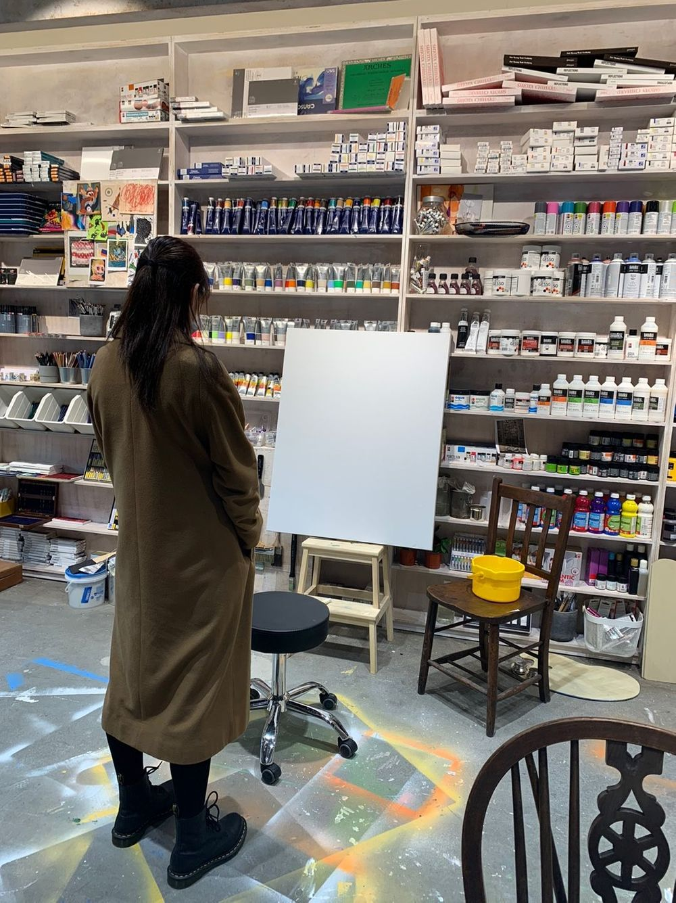
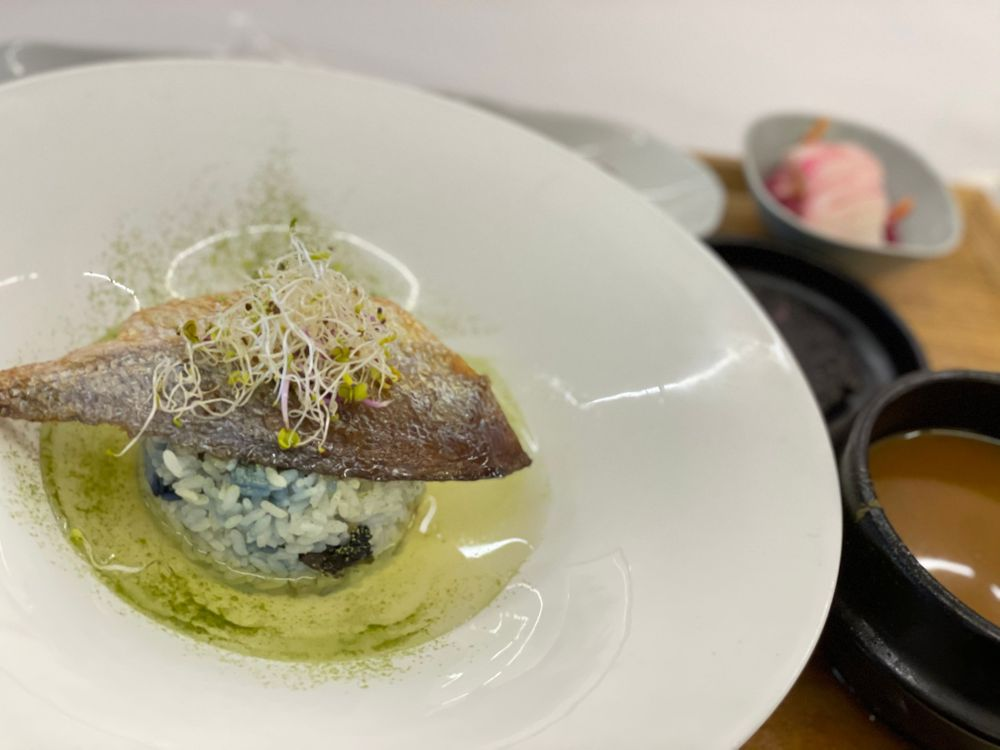

난 어울리지 않는 사람이라고 생각했다

취미

음식
새로 경험하는 모든 것들이...
나혼자 방안에서 나오지 않고
아무것도 하고 있지 않았다면
경험해 볼 수 있었을까 한 모든 일들이
낯설었다..
그래서 전시회나 식당.. 미술.. 다녀오면
잘 보고 잘 먹고 왔어도 마음 한 켠에
날 많은 곳을 경험시켜 주신 분을 향한 죄송함이 꼭
있었던 것 같다
나 스스로 나를 그렇게 생각했으니까..
춤출 때나 무대에서는 전혀 느껴보지 못한 마음이라
당황스럽다.
여기서 마주친 평소 내 자존감의 첫인상은 별로다.
" 너 예술이랑 잘 어울려 사진 찍은 거 못봤어?
그게 안 어울리는 거면 누가 잘 어울리는 거야
관심도 없고 흥미를 못 느끼는 사람이 안 어울리는 거지
너 너무 잘 어울려 "
라는 말에 눈물로 세수했다.
사실 또 죄송하긴 했다.
좋은 것만 보고 듣고 느끼게 해주시고 계시는데
감을 잃고 있는 모습을 보여드린 것 같아서..
나는 잘 어울린다.
잘 어울린다 나는.
사실 나는 잘 어울리는 것이였다.